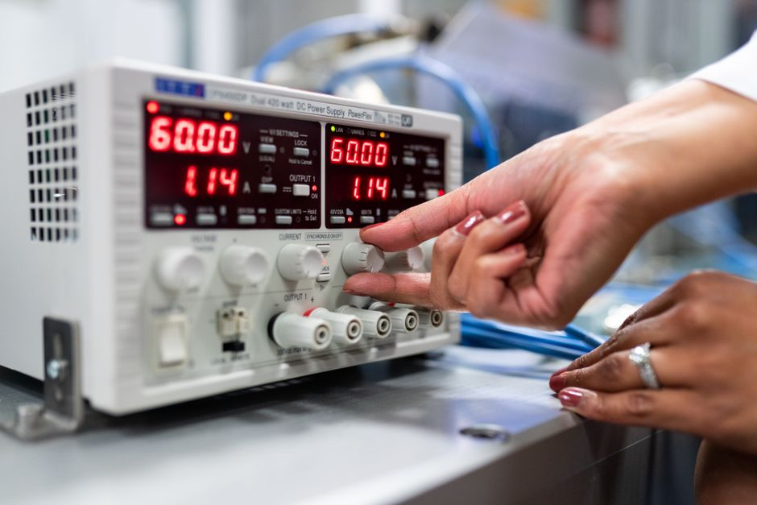
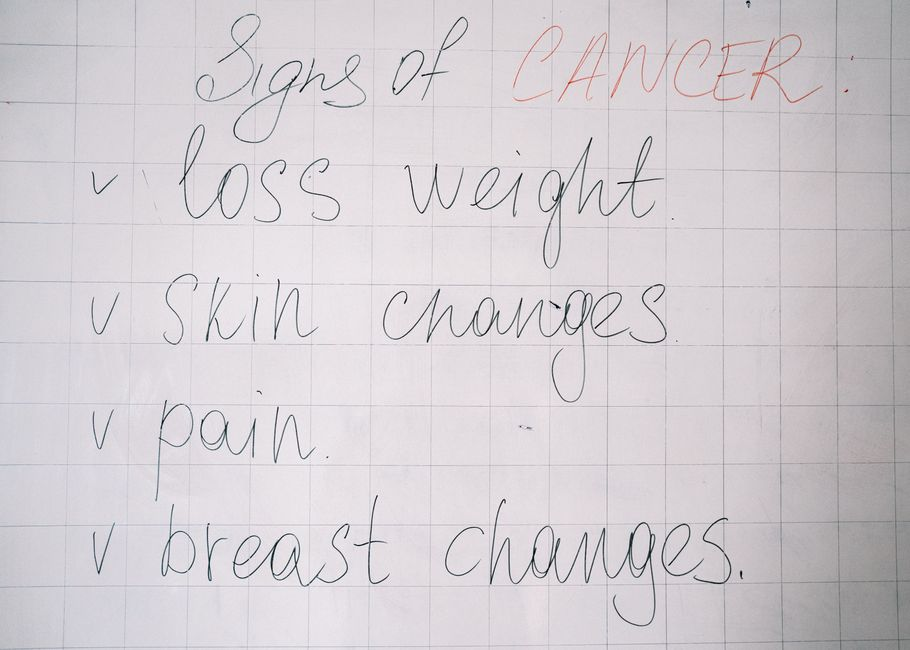

Ablation Studies: Isolating What Actually Helped
When a model improves, it is tempting to credit the flashiest new idea. Ablation studies force you to check whether that credit is deserved.

Why the win is rarely what you think it is
You change five things at once: a new attention variant, a bigger batch size, label smoothing, a different learning rate schedule, and an extra regularisation term. Accuracy goes up by three points. It is enormously tempting to write a paper, or a report, that attributes the gain to the attention variant, because that is the interesting idea you set out to test. The uncomfortable truth is that you have no evidence for that claim. You have evidence that the combination works better than the old combination, and nothing more specific than that.
This is not a pedantic concern. In my own experiments I have seen a supposedly clever architectural tweak contribute almost nothing once I checked, with the actual improvement coming from a longer warmup schedule that I had changed at the same time out of habit. Had I not gone back and isolated the variables, I would have carried a false belief into the next project, tried to reuse the wrong idea, and been confused when it failed to generalise elsewhere.
An ablation study is simply the discipline of removing or replacing one component at a time and re-measuring, so that each claim about causation is backed by a controlled comparison rather than a single before-and-after number. It is unglamorous work. It rarely produces a paragraph you want to write. But it is the difference between an empirical finding and a story you have told yourself about your own model.
A worked example: three changes, one score
Suppose your baseline model gets sixty eight percent accuracy on a held-out test set. You introduce three changes at once and your new model gets seventy four percent. Six points is a meaningful jump, so it is worth understanding where it came from. The three changes are: swapping mean pooling for an attention pooling layer, adding dropout of zero point two before the final classifier, and switching from a fixed learning rate to cosine decay.
A proper ablation reintroduces the baseline and removes one change at a time, keeping everything else fixed, including the random seed where feasible. Say the results come out as follows: baseline plus attention pooling alone reaches seventy percent; baseline plus dropout alone reaches sixty nine percent; baseline plus cosine decay alone reaches seventy two percent. None of these single changes reaches seventy four percent on its own, which tells you the components interact, but it also tells you something sharper: cosine decay is doing most of the work, attention pooling adds a modest amount, and dropout alone is barely distinguishable from noise given a typical run to run variance of about one point on a dataset this size.
That last detail matters enormously and is the part people skip. If your test set is small enough that repeated runs with different seeds swing by a point or more, then a one point difference between two ablation conditions is not evidence of anything. You need either a large enough evaluation set, or multiple seeds with reported variance, before you can say with a straight face which piece of your pipeline earned its place. Reporting a single ablation number per condition, without any sense of its spread, is a way of dressing up noise as insight.

Designing ablations that do not lie to you
The first rule is to change one thing at a time relative to a fixed, well-understood baseline, not relative to your full final model. Removing one component from the full model and calling the drop its contribution assumes the components do not interact, which is often false, as the example above shows. Where interactions are plausible, a leave-one-out grid across a small number of components, ideally combined with an additive build-up from the baseline, gives you a much more honest picture than either approach alone.
The second rule is to keep the evaluation protocol identical across every condition. This sounds obvious but is where leakage quietly creeps in. If your baseline was tuned on a validation split that later got folded into training data for the ablated variants, or if early stopping was applied inconsistently, then differences between conditions reflect the inconsistency rather than the component you are studying. I have caught this in my own work by simply checking that the exact same data indices, the exact same preprocessing code path, and the exact same stopping criterion were used everywhere, and it is worth the tedium because the failure mode is silent: your numbers look fine, they are just wrong.
The third rule is to ablate the boring things too, not just the novel ones. Researchers naturally want to ablate the part of the model they invented, because that is the part they are emotionally invested in. But a stronger baseline, better data cleaning, or a longer training schedule can quietly account for most of an improvement, and if you never test those against your novel component, you will never find out. A fair ablation study treats your own clever idea with the same suspicion it applies to everything else.
The practical takeaway
Before you claim that a specific change improved your model, ask whether you actually isolated that change or merely changed several things and watched the total move. If it is the latter, budget time for a proper ablation before you trust the result, let alone report it. Keep the baseline fixed, change one factor at a time, hold the evaluation protocol rigidly constant, and check the variance across seeds before treating small differences as real.
None of this is exciting work, and that is precisely the point. The value of an ablation study is not in producing a headline number, it is in letting you say, with some confidence, which part of your system is doing the work. That confidence is what makes a result reusable in the next project rather than a one-off number that nobody, including you, can fully explain.
